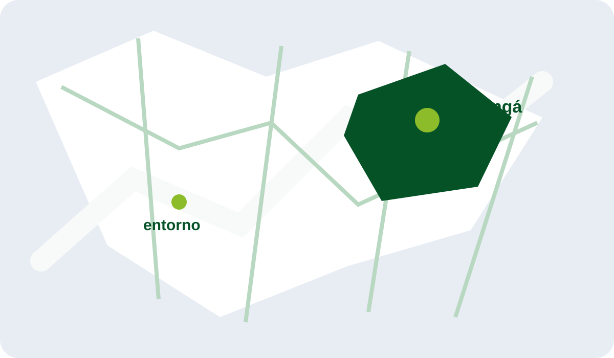

imagem demonstrativa
ESCOLHA COM CLAREZA
Um imóvel pode ser o começo de uma vida com mais espaço para acontecer.
percorra uma seleção demonstrativa e leve para a conversa o que realmente importa para você.
Explorar para comprarESCOLHA COM CLAREZA
percorra uma seleção demonstrativa e leve para a conversa o que realmente importa para você.
Explorar para comprarO LUGAR ANTES DA DECISÃO
O percurso começa visual: primeiro o clima, depois as perguntas certas. A experiência foi desenhada para aproximar desejo, contexto e conversa.
01 — revelar o contextoUMA LEITURA MAIS HUMANA
02 — escolher o formatoCada caminho pede um tipo de atenção. Por isso a navegação mantém o visitante em uma narrativa linear, com uma próxima ação clara em cada momento.
A CIDADE TAMBÉM ESCOLHE
Um mapa estático para situar o território da conversa. Não é uma navegação cartográfica ao vivo.
Maringá e entorno
PRÓXIMO PASSO
Escolha uma intenção para preparar uma conversa mais objetiva com a Silvio Iwata.
Uma conversa sobre localização, espaço e o que precisa acontecer para a decisão fazer sentido.
Continuar para atendimentoOrganize a busca por região, tipo de imóvel e o próximo passo para mudar.
Continuar para atendimentoUma primeira conversa sobre região e possibilidades, sem promessa de rentabilidade.
Continuar para atendimentoEsta é uma apresentação demonstrativa. Nenhuma mensagem é enviada por esta tela.